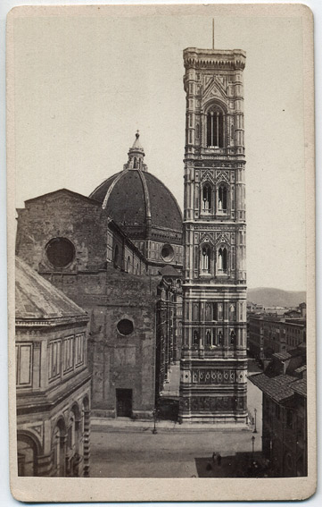
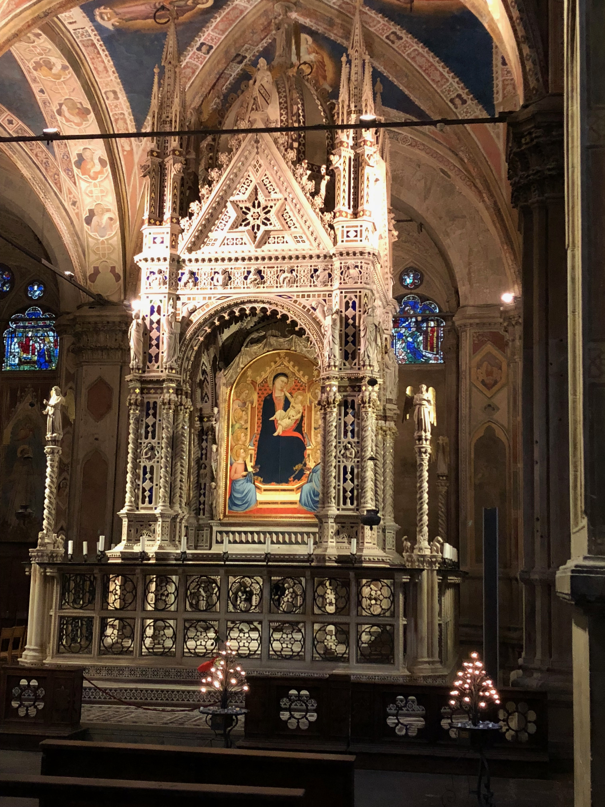

Here you will find the compendium of all our Florentine research and scholarship.
Baptism in Florence
The ritual of baptism was a crucial feature of fourteenth- and fifteenth-century Florence. This symbolic practice carried both a spiritual and social weight integral for full participation in the fabric of Florentine society. Baptism was not only a means of defense against hellfire, but an introduction to civic society and a foundational moment in each individual’s life. While some of the finer details of the practice are unclear to contemporary scholars, we now know that by 1128 the ritual was performed at the octagonal Baptistery of San Giovanni, located directly across from the cathedral.

Andrea Pisano: ca. 1295 – 1348
As his surname suggests, Andrea Pisano came from the city of Pisa, located some 45 miles to the west of Florence on the banks of the Mediterranean Sea. Although not directly descended from the father-son team of Nicola and Giovanni Pisano, Andrea’s contributions to the legacy of fourteenth-century art are no less important than those of his more famous predecessors.

Bernardo Daddi: ca. 1280 – 1348
A late contemporary of the famous painter Giotto di Bondone, Bernardo Daddi (ca. 1280 – 1348) became one of Florence’s most popular and most important producers of panel pictures during the two decades that preceded the advent of Bubonic Plague. The identity of his master remains unclear, and speculations range from Giotto himself to obscure miniaturists like the elusive Master of the Dominican Effigies.
Ferdinando del Migliore:
Ferdinando del Migliore was born in 1628 and spent his adult life researching and writing about the history of Florence. A gifted archivist, del Migliore scoured the registers and contracts of individuals and institutions in an effort to present to his readers accurate accounts of the city’s past.
Andrea Pisano's Baptistery Doors:
#Baptistery of S. Giovanni, South Doors (1330-1336)
##Andrea Pisano
Bigallo Last Judgement: ca. 1363
#Nardo di Cione, Last Judgment, ca. 1363
The wall just within the confines of the Bigallo’s loggia contains a now-damaged and detached fresco that probably illustrated the theme of the Last Judgment that artists like Nardo di Cione found so appealing during the fourteenth century (figure 1). The painting faced out toward the public from the chamber just inside the entrance, positioned on its west wall and facing east toward the Campanile that Andrea Pisano had recently ornamented with dozens of marble reliefs.
The composition features the figure of Christ, who blesses viewers from his perch on a celestial cloudbank while holding in his left hand the open book emblazoned with the Alpha and Omega (the first and last letters of the Greek alphabet, symbolic of the notion that Christ is the beginning and the ending of all things). Two pairs of angels flank him, some genuflecting with musical instruments in their hands and the others crossing their arms over their chests while gazing at their performing mates (figure 2). A constellation of gold stars covers what remains of the blue field below, damaged when the sculptural ensemble produced by Alberto Arnoldi was removed and relocated elsewhere in the Bigallo.
Circumstantial evidence points toward Nardo as the artist responsible for the Last Judgment. Documents tell us that Nardo was paid to paint the ceiling vaults of the Bigallo in October, 1363 and that, at the time of his death two years later, he bequeathed to the institution a portion of his estate. Although neither archival reference pertains specifically to the wall on which the Last Judgment appears, scholars agree that Nardo was probably the author of the painting, and that the picture was most likely produced sometime in the early 1360s, at roughly the same time as Arnoldi’s Madonna and Child was sculpted for and installed in the loggia.
The damage to this fresco obviously impedes our understanding and interpretation of it within the context of the Bigallo’s development as a charitable, social, and political institution. Certainly its subject matter made clear the spiritual qualities to which the Company of the Misericordia aspired, while the rather fierce representation of the uncompromising Christ figure must have injected into this setting – and projected onto the street where passersby could see it – a severe reminder of the fleetingness of time and the certainty of judgment at the End of Days. For precisely these reasons the Last Judgment was the perfect image for a confraternity eager to coax new members (and deep-pocketed donors) into its midst, for this reminder of the importance the Christian faith placed on works of charity was more than a subtle hint that this was a place worth supporting.
Bent, George R. Public Painting and Visual Culture in Early Republican Florence (Cambridge University Press: New York, 2017)
Kreytenberg, Gert. “Die Trecenteske Dekoration der Stirnwand im Oratorio del Bigallo.” Mitteilungen des Kunsthistorischen Institutes in Florenz 20 (1976): 397-403.
GB
The Bigallo: ca. 1352 – 1358
Built in the middle of the fourteenth century, the Oratory of the Misericordia (as it was then known) has endured expansions, fires, renovations, a merger, and more to become the elegant structure that stands on the Piazza del Duomo today. Read more about the structure’s tumultous history here. Explore the headquarters of one of the city’s most prominent charities, the Confraternity of the Misericordia, later merged with that of the Bigallo, and see the art that it commissioned to assert its place in Florentine society.

Campanile:
The project to carve reliefs for the lower portion of the Campanile coincided with the earliest architectural plans for Giotto’s bell tower that stands adjacent to the city’s cathedral. Initiated sometime around 1334 by Andrea Pisano, who was by then chasing the bronze panels he had cast for the south doors of the Baptistery, these early reliefs represented [scenes from the Book of Genesis] that were intended for the west side of building’s lowest level.
St. Matthew, Orsanmichele Pier:
##Andrea di Cione and Jacopo di Cione, St. Matthew, 1369
###Uffizi Galleries (ex-Orsanmichele, south pier)

Orsanmichele Tabernacle:
##Andrea di Cione, Baldacchino, 1352-59#
###Orsanmichele##
The Judgement of Brutus:
Nardo di Cione (?), The Judgment of Brutus, ca. 1345
Dante Society (ex-Palazzo del Arte della Lana, Sala d’Udienza)